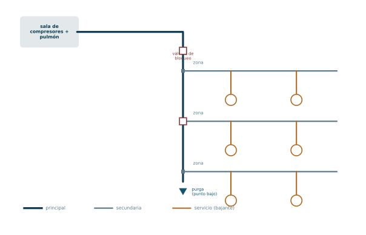
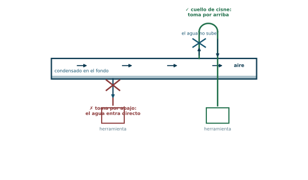
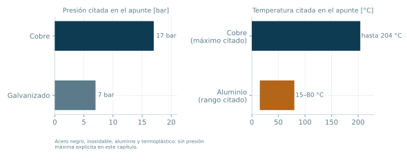

Transporte y distribución: la red
Del pulmón en adelante el aire tiene que moverse por kilómetros de cañería. Eso trae dos problemas nuevos, pérdida de carga y condensado en movimiento, y la red es la respuesta de diseño a los dos.
Bloque 4 · Apunte de cátedra, páginas 53 a 56 (red) y 70 a 76 (materiales y accesorios) · Ing. Luciano Manavella · Instalaciones Industriales, UTN FRC
De dónde venimos y a dónde vamos
Del Bloque 3 salimos con el aire almacenado en el pulmón a presión estable. Todo lo que hicimos hasta acá pasó dentro de recipientes: compresor, refrigerador, secador, filtros, tanque. El aire estuvo prácticamente quieto.
A partir de ahora tiene que moverse, y moverse por kilómetros de cañería hasta cada punto de trabajo. Eso introduce dos problemas nuevos que no existían antes:
- La pérdida de carga. Cada metro de caño, cada codo, cada te y cada cambio de sección se cobran en bar. Al final del recorrido llega menos presión de la que salió.
- El condensado en movimiento. El agua que el pulmón no separó viaja con el aire. Si no se le da un camino de salida, se acumula en los puntos bajos y termina llegando a las herramientas.
La red no es «caño». Es la respuesta de diseño a esos dos problemas.
ℹ Lo que traés del bloque anterior
- El aire sale del pulmón en condiciones Normales cuando se lo expresa en catálogo, pero circula por el caño a la presión de trabajo. Esa distinción vuelve a importar cuando se calculen diámetros (Bloque 6).
- El pulmón separa condensado, pero no lo elimina todo. Siempre queda agua en tránsito.
- El aire, por ser compresible, cambia de densidad a lo largo del recorrido a medida que pierde presión. Eso explica por qué la fórmula de pérdida de carga (Bloque 6) tiene una forma poco intuitiva.
✔ Cómo estudiar este bloque para opción múltiple
Este bloque es, junto con el 6, el más denso en datos numéricos sueltos y en listas de ventajas y desventajas. Es material ideal para opción múltiple y es donde más fácil se pierden puntos por confiar en la intuición. Concentrate en tres cosas:
- Los números: pendiente 0,5 a 2 %, diámetro mínimo de bajante, presiones y temperaturas admisibles de cada material.
- Los pares de opuestos: red abierta vs. red cerrada, y los materiales entre sí. Casi todo ítem MC de este bloque es una comparación.
- Las reglas absolutas, que se prestan a preguntas de verdadero o falso disfrazadas: la toma siempre por arriba, el montaje siempre aéreo, la tubería nunca en contacto con cables eléctricos.
Objetivos de aprendizaje
- Clasificar cualquier tramo de una instalación como tubería principal, secundaria o de servicio, y decir qué caudal transporta cada una.
- Explicar por qué en las tres se prevé un margen para ampliaciones.
- Comparar red abierta y red cerrada en inversión, mantenimiento, dirección del flujo y eliminación de condensado.
- Justificar por qué la red abierta lleva pendiente y la cerrada no puede tenerla útilmente, y qué consecuencia tiene eso.
- Explicar el cuello de cisne y por qué la toma va siempre por arriba.
- Elegir un material de cañería y defender la elección con al menos tres criterios técnicos.
- Reconocer las limitaciones específicas de cada material (corrosión, temperatura, presión, tipo de unión, personal requerido).
Mapa de entrada
¿Cómo se organiza?
Principal → secundarias → de servicio (bajantes). Cada nivel toma aire del anterior y transporta menos caudal.
¿Qué forma tiene?
Abierta (barata, mantenimiento malo, pendiente posible) vs. cerrada (cara, mantenimiento bueno, flujo sin dirección fija).
¿Cómo se conecta el consumo?
Siempre por arriba → cuello de cisne.
¿De qué está hecha?
Metálicas (acero negro, galvanizado, inoxidable, cobre, aluminio) y no metálicas (termoplástico PE).
Una rama secundaria cuelga de «¿Qué forma tiene?»: las reglas de montaje — aérea, recta, sin contacto eléctrico, con dilatación, con válvulas de bloqueo.
1. La red: los tres niveles de tubería
Para transportar y distribuir el aire comprimido se emplea una red. Dentro de ella se distinguen tres tipos de tubería, y la clasificación es jerárquica: cada nivel toma aire del anterior y transporta menos caudal.
1.1 Tubería principal
Sale del depósito o pulmón y canaliza la totalidad del caudal de aire. Para determinar la sección de pasaje debe preverse un margen de seguridad que contemple posibles crecimientos de la planta.
1.2 Tuberías secundarias
Toman el aire de la tubería principal y se ramifican por las zonas de trabajo. El caudal que transporta cada una es la suma de los caudales que de ella se deriven. También acá conviene pensar en futuras ampliaciones al calcular el diámetro.
1.3 Tuberías de servicio
Son las bajantes que alimentan los equipos neumáticos en los puntos de manipulación. Están equipadas con:
- Acoples rápidos para la conexión de mangueras.
- Los grupos filtro-regulador-lubricador (FRL), que se desarrollan en el Bloque 5.
Se dimensionan en base al consumo que alimentan, y hay una regla dura:
Diámetro mínimo de bajante
Se debe evitar utilizar tuberías de sección menor a 1/2" en las tuberías de servicio.

ℹ Por qué las tres se sobredimensionan
El criterio de «prever ampliaciones» aparece en los tres niveles, y no es conservadurismo gratuito. Tiene una razón física y una económica.
La razón física: en el Bloque 6 vas a ver que la pérdida de carga va con el diámetro interior elevado a la quinta potencia, en el denominador. Un caño apenas más chico de lo necesario no pierde «un poquito» más: pierde muchísimo más. Duplicar el diámetro divide el término de pérdidas por 32.
La razón económica: el costo de un caño más grande es marginal frente al costo de volver a instalar la red. El caño se paga una vez; la pérdida de carga se paga todos los días en energía del compresor.
Por eso el apunte insiste en que un buen diámetro de la tubería principal evita problemas ante una ampliación de la red.
2. Redes abiertas y redes cerradas
Esta es la comparación central del bloque y la fuente más probable de preguntas.
2.1 Red abierta
Se constituye por una sola línea principal de la cual se desprenden las líneas secundarias y las de servicio (Fig. 52, p. 54).
- Se deben implementar inclinaciones de las tuberías entre 0,5 y 2 % en la dirección del flujo de aire comprimido, para conducir y eliminar el condensado.
- Ventaja principal: la baja inversión inicial necesaria para lograr esta configuración.
- Desventaja principal: el mantenimiento. Ante una reparación es posible que se detenga el suministro de aire «aguas abajo» del punto de corte, lo que implica una detención de la producción.
| Ref. | Elemento |
|---|---|
| 1 | Compresor |
| 2 | Refrigerador posterior |
| 3 | Depósito o pulmón con purga automática incorporada |
| 4 | Separador de condensado |
| 5 | Tubería de servicio (bajante) con válvula de bloqueo y purga |
2.2 Red cerrada
La línea principal se cierra sobre sí misma formando un anillo (Fig. 53, p. 55).
- La inversión inicial es mayor respecto de la red abierta.
- Se facilitan las labores de mantenimiento sin afectar la producción: si se corta un tramo, el aire llega por el otro lado del anillo.
- Falta de dirección constante del flujo. La dirección en cada punto depende de las demandas puntuales, así que el aire cambia de sentido según el consumo.
- Defecto derivado: la dificultad de eliminar el condensado, precisamente por esa falta de dirección constante. Por eso es necesario incorporar secadores para el aire comprimido.
| Ref. | Elemento |
|---|---|
| 1 | Compresor |
| 2 | Refrigerador posterior |
| 3 | Depósito o pulmón con purga automática incorporada |
| 4 | Secador de aire (de adsorción) |
ℹ La cadena causal completa de la red cerrada
Esta es la pregunta de comprensión más probable del bloque, y conviene tenerla como una cadena de cuatro eslabones y no como cuatro datos sueltos:
el anillo se cierra → el flujo puede ir para cualquiera de los dos lados según dónde se consuma → no hay una «dirección aguas abajo» estable → la pendiente no sirve para arrastrar el condensado hacia un punto de purga → hay que sacar el agua antes de que entre a la red, o sea, secando.
Fijate que la ventaja y la desventaja de la red cerrada son la misma propiedad mirada desde dos lados: la redundancia de caminos es lo que le da continuidad de servicio y lo que le quita dirección de flujo. No son dos características independientes.
2.3 Tabla comparativa
| Criterio | Red abierta | Red cerrada |
|---|---|---|
| Inversión inicial | Baja | Mayor |
| Mantenimiento | Puede cortar el suministro aguas abajo y detener la producción | Se puede reparar sin afectar la producción |
| Dirección del flujo | Constante, definida | Variable, depende de las demandas puntuales |
| Pendiente | 0,5 a 2 % en la dirección del flujo | No es efectiva, por falta de dirección constante |
| Eliminación del condensado | Por pendiente y purgas en puntos bajos | Difícil ⇒ se requiere secador |
| Longitud de cañería | Menor | Mayor |
Red abierta, en una frase
Barata de instalar, mala para mantener: cortás un tramo y apagás todo lo que sigue.
Red cerrada, en una frase
Cara de instalar, buena para mantener: pero sin dirección fija de flujo, necesita secador.
3. La toma de aire: el cuello de cisne
Este es el punto donde la red se conecta al consumo, y tiene una regla que el apunte escribe en mayúsculas, cosa que hace en muy pocos lugares:
◆ Regla absoluta
LA TOMA DE AIRE COMPRIMIDO DEBE HACERSE SIEMPRE DESDE LA PARTE SUPERIOR DE LA TUBERÍA, porque el condensado se encuentra en la parte inferior de la misma.
Para esto se recurre a una acometida llamada cuello de cisne.
El cuello de cisne es literalmente eso: la derivación sale por arriba del caño principal, hace una curva y recién ahí baja hacia el punto de uso.

ℹ Por qué funciona
Dentro del caño hay dos fluidos conviviendo: aire, que ocupa toda la sección, y agua líquida, que por densidad corre pegada a la generatriz inferior. Si derivás por abajo, tu bajante es el primer camino que encuentra el agua para irse: le estás dando un desagüe directo a la herramienta.
Si derivás por arriba, el agua tiene que subir contra la gravedad para entrar, y no lo hace. Sigue de largo por el fondo del caño hasta el próximo punto de purga.
Es la misma lógica del sifón invertido, y es una de esas soluciones que no cuestan nada y resuelven un problema entero. Por eso está en mayúsculas.
⚠ El error de examen y el error de obra
En el parcial: elegir la opción que dice «por la parte inferior» porque suena razonable si uno piensa en la gravedad ayudando a bajar el aire. El aire no necesita ayuda de la gravedad; el agua sí, y esa es justamente la que no querés.
En obra: hacer el cuello de cisne pero con la curva demasiado corta, de modo que el punto alto queda apenas por encima de la generatriz superior. Con arrastre de gotas a alta velocidad, el agua salta igual. La acometida tiene que subir de verdad antes de bajar.
4. Reglas de montaje de la red
El apunte lista una serie de recomendaciones para las instalaciones. Las que se refieren al trazado y montaje de la red son estas (las que se refieren al cálculo van en el Bloque 6).
| # | Recomendación | Por qué |
|---|---|---|
| C | Diseñar la red en base a la arquitectura del edificio y a los requerimientos de pureza del aire | La red se adapta al edificio, no al revés |
| D | Tubería lo más recta posible, para disminuir longitud, número de codos, tes y cambios de sección | Todos ellos aumentan la pérdida de presión |
| E | Montaje siempre aéreo, sostenido de techos y paredes | Facilita accesorios, puntos de drenaje, ampliaciones, inspección y mantenimiento |
| F | La tubería no debe entrar en contacto con cables eléctricos | Prevención de accidentes |
| G | Prever libertad para que la tubería se expanda o contraiga ante variaciones de temperatura | Dilatación térmica |
| H | Antes de implementar extensiones o nuevas demandas, verificar los diámetros | Una ampliación sobre un diámetro justo dispara la pérdida de carga |
| I | Un buen diámetro de la tubería principal evita problemas ante una ampliación | Es la decisión más difícil de revertir |
| J | Ubicar frecuentemente válvulas de bloqueo en la red | Permite aislar tramos para mantenimiento |
| K | Todo cambio brusco de dirección o inclinación es un sitio de acumulación de condensados | Ahí van las purgas |
| L | Las tomas para bajantes nunca por la parte inferior, siempre por la superior | Cuello de cisne |
ℹ Ampliación Ampliación — el montaje aéreo tiene una razón que el apunte no dice explícitamente
El apunte justifica el montaje aéreo por accesibilidad, y es cierto. Pero hay una segunda razón, más de fondo: una cañería enterrada no se puede purgar ni inspeccionar, y el aire comprimido siempre lleva agua.
Un caño enterrado con condensado adentro se corroe desde adentro hacia afuera, en un lugar donde no vas a ver la mancha de óxido ni escuchar la fuga. Cuando te enterás, ya perdiste presión durante meses y contaminaste la red con partículas de óxido. Aéreo, la misma falla se ve, se escucha y se arregla en una mañana.
5. Materiales de la cañería
⚠ Dónde está esto en el apunte
Este capítulo corresponde a las páginas 70 a 76 del apunte, donde aparece dentro del capítulo de proyecto, después del cálculo de diámetros. Lo traemos acá porque temáticamente es parte de la red: no se puede hablar de la red sin decir de qué está hecha.
Si estudiás en paralelo con el PDF de cátedra, tenelo presente para no buscarlo en el lugar equivocado.
Los materiales se dividen básicamente en dos tipos: metálicos y no metálicos. Al tubo no metálico se lo llama tubo termoplástico. Las canalizaciones metálicas pueden ser de acero negro, acero inoxidable, cobre o aluminio extruido y anodizado.
5.1 Acero negro
Las tuberías de acero negro Schedule 40 son las más comunes en los sistemas de aire comprimido, por su buen precio y durabilidad.
- Los tubos de diámetro menor a 76 mm normalmente están roscados; los de mayor diámetro necesitan soldaduras y bridas.
- Se corroen si están expuestos a humedad condensada, y aparecen constantemente partículas sólidas que provocan contaminación.
- La corrosión interna se agrava con condensados de características altamente ácidas.
- Comparado con aluminio o cobre, es mucho más pesado y difícil de manejar, lo que incrementa significativamente las horas de trabajo de instalación.
5.2 Acero galvanizado
Muchas veces se seleccionan tuberías de acero galvanizadas para el transporte a 7 bar. El revestimiento ayuda a que no se oxiden tanto como las estándar Schedule 40.
Pero con el paso del tiempo, cuando hay señales de corrosión, el material galvanizado empieza a desprenderse. En consecuencia, las tuberías se convierten en una fuente de contaminantes potencialmente destructivos que pueden afectar la integridad mecánica de los componentes del sistema.
⚠ El galvanizado no es «acero negro pero mejor»
Es una de las trampas conceptuales del tema. El galvanizado pospone el problema, no lo elimina, y cuando falla, falla peor: el acero negro se corroe y suelta óxido, que es feo pero blando; el galvanizado suelta escamas de zinc, que son duras y viajan por la red hasta trabar una válvula o rayar un cilindro.
En un ítem MC, una opción que diga «el galvanizado elimina definitivamente el problema de la corrosión» es falsa por definición.
5.3 Acero inoxidable
Las tuberías del tipo Schedule 10 son:
- Livianas en comparación con el acero negro y resistentes a la corrosión.
- Fáciles de manejar, por lo que deberían ser más baratas de instalar, pero requieren soldadores profesionales.
- Para conexiones soldadas, el inoxidable necesita un solo cordón de soldadura, mientras que el acero negro requiere tres (soldadura, rellenado y cobertura).
- No precinta bien cuando se enrosca: funciona mucho mejor con conexiones con ranuras.
5.4 Cobre
Los tubos de cobre son una selección muy común y, con las medidas y conexiones adecuadas, son muy duraderos y efectivos.
- Los tipos M hard, L hard y K soft funcionan a presión de 17 bar.
- Resisten altas temperaturas de hasta 204 °C.
- Aunque el cobre fallara, lo haría de una manera predecible: los extremos de los tubos empezarían a separarse.
- No se recomienda la soldadura con plomo: tiene resistencia muy baja, pueden aparecer fugas, y según la aleación empieza a derretirse a 183 °C.
- Las soldaduras de plata o soldaduras duras son formas de soldadura fuerte, no deben confundirse con las de plomo, y se derriten entre 618 y 982 °C.
5.5 Aluminio extruido y anodizado
Muy utilizado. Sus características:
- Muy resistente a la corrosión y ligero, lo que permite una instalación más fácil.
- La falta de corrosión interna se traduce en una superficie interior más lisa, reduciendo la pérdida de presión que provoca la fricción.
- El diámetro interior de las conexiones es exacto al diámetro interior de los tubos, así que no hay obstáculos en el flujo de aire.
- Elevada flexibilidad de las conexiones: el sistema se adapta fácilmente a las necesidades del edificio y a los requerimientos de montaje y desmontaje de las áreas de producción.
- Se puede instalar o desmontar sin necesidad de personal técnico o soldadores expertos.
- Rango de temperatura de operación de 15 a 80 °C, que puede variar según las marcas.

ℹ Las dos ventajas del aluminio que son la misma
«Superficie interior lisa» y «diámetro interior de la conexión igual al del tubo» apuntan al mismo objetivo: minimizar la pérdida de carga.
La primera ataca la rugosidad, que es la fricción distribuida a lo largo del caño. La segunda ataca los escalones internos en cada unión, que son pérdidas localizadas. Un accesorio roscado convencional siempre reduce la sección de paso en la unión, y cada reducción es un accesorio más que sumar a la longitud equivalente.
En un sistema donde el apunte pide que la caída total no supere 0,6 bar, esas pérdidas localizadas dejan de ser un detalle.
5.6 Tuberías termoplásticas
Se unen mediante termofusión. El material es resina de polietileno (PE), especialmente formulada para ser resistente a los aceites sintéticos y minerales usados en la lubricación de compresores.
Su instalación tiene diferencias considerables respecto del metal y debe ser realizada por personal capacitado. Consideraciones:
- No es resistente a los rayos UV: debe instalarse con protección suficiente si se expone a la luz solar directa.
- No instalar cuando la temperatura ambiente sea inferior a 5 °C, ni con viento o lluvia.
- Dejar pasar de 24 a 48 horas para que el material se adapte a la temperatura ambiente antes de soldar.
- Se debe probar la presión de todos los sistemas de tuberías según las normas correspondientes.
5.7 Tabla comparativa de materiales
| Material | Norma / tipo | Datos duros | Fuerte | Débil |
|---|---|---|---|---|
| Acero negro | Schedule 40 | Roscado hasta 76 mm; más allá, soldado o bridado | Precio y durabilidad; el más común | Se corroe con condensado, peor si es ácido; pesado |
| Acero galvanizado | — | Usado para transporte a 7 bar | Menos oxidación que el negro | El recubrimiento se desprende con el tiempo y contamina |
| Acero inoxidable | Schedule 10 | 1 cordón de soldadura (el negro necesita 3) | Liviano y resistente a la corrosión | Requiere soldadores profesionales; no sella bien roscado |
| Cobre | M hard, L hard, K soft | 17 bar; hasta 204 °C; plomo funde a 183 °C, plata/fuerte 618–982 °C | Duradero; falla predecible | No soldar con plomo |
| Aluminio | Extruido y anodizado | 15 a 80 °C (según marca) | Liviano, no se corroe, interior liso, racores sin obstrucción, montaje sin soldador | Rango de temperatura acotado |
| Termoplástico | Resina de PE, termofusión | No instalar bajo 5 °C; aclimatar 24–48 h | Resiste aceites sintéticos y minerales | No resiste UV; requiere personal capacitado |
6. Accesorios
Los accesorios son los elementos utilizados para la unión de las tuberías. En este grupo se encuentran: cuplas, reducciones, codos, curvas, tes, etc.
- Acero (negro o galvanizado): accesorios roscados, con rosca BSP o NPT, hasta un tamaño de 4 pulgadas. Para dimensiones superiores hay que recurrir a uniones bridadas o soldadas (Fig. 64, p. 73).
- Aluminio: los accesorios se llaman racores, diseñados para que sean muy fáciles de instalar y desinstalar. Su forma cambia en función del tamaño de la tubería (Figs. 65 a 67, pp. 73–75).
- Termoplásticos: muy variados, incluyendo el adaptador roscado para conectar con elementos metálicos. La unión se hace por termofusión entre tubería y accesorio (Figs. 68 a 70, pp. 75–76).
ℹ Ampliación Ampliación — los accesorios no son un detalle de compra
Cada accesorio se traduce en una longitud equivalente de cañería recta, y esa longitud entra directamente en la fórmula de pérdida de carga del Bloque 6. Un codo de 90° a 2" puede equivaler a más de un metro de caño recto; una te derivada, a varios metros.
Por eso la recomendación D del apunte («tubería lo más recta posible») no es estética. Cada codo que sacás del trazado es longitud que le restás al cálculo, presión que no perdés y kilovatios que el compresor no consume. La tabla de longitudes equivalentes (Fig. 61, p. 66) se usa en el Bloque 6.
7. Datos duros para memorizar
| Dato | Valor |
|---|---|
| Pendiente en red abierta | 0,5 a 2 %, en la dirección del flujo |
| Diámetro mínimo de tubería de servicio | 1/2" (evitar secciones menores) |
| Acero negro: umbral roscado / soldado | 76 mm |
| Acero negro / inoxidable: schedule | Sch 40 / Sch 10 |
| Cordones de soldadura: inoxidable vs. acero negro | 1 vs. 3 |
| Cobre: presión de trabajo | 17 bar |
| Cobre: temperatura máxima | 204 °C |
| Soldadura de plomo: fusión | 183 °C (no recomendada) |
| Soldadura de plata / fuerte: fusión | 618 a 982 °C |
| Aluminio: rango de temperatura | 15 a 80 °C |
| Termoplástico: material | Resina de polietileno (PE) |
| Termoplástico: temperatura mínima de instalación | 5 °C |
| Termoplástico: aclimatación antes de soldar | 24 a 48 horas |
| Accesorios de acero roscados hasta | 4 pulgadas |
| Roscas de accesorios de acero | BSP o NPT |
| Accesorios de aluminio | Racores |
| Unión de termoplástico | Termofusión |
| Elemento adicional obligado en red cerrada | Secador |
8. Trampas típicas de opción múltiple
| Se confunde… | Con… | Cómo distinguirlos |
|---|---|---|
| Red abierta | Red cerrada | Abierta: barata, mantenimiento malo, flujo con dirección fija, pendiente útil. Cerrada: cara, mantenimiento bueno, flujo sin dirección fija, necesita secador. |
| «La red cerrada elimina mejor el condensado» | Es al revés: le cuesta más | Sin dirección constante, la pendiente no arrastra el agua a ningún lado. |
| Toma por arriba | Toma por abajo | Siempre por arriba, cuello de cisne. El condensado va por el fondo. |
| Pendiente 0,5–2 % | 5–10 % (que es el tope de fugas, Bloque 6) | Son dos números distintos de dos temas distintos. |
| Tubería secundaria | Tubería de servicio | La secundaria se ramifica por zonas; la de servicio es la bajante al equipo, con acople rápido y FRL. |
| Schedule 40 | Schedule 10 | 40 = acero negro, 10 = inoxidable. |
| Cobre 17 bar | Cobre 204 °C | 17 es presión, 204 es temperatura. |
| Plomo 183 °C | Plata 618–982 °C | El plomo funde bajo y por eso no se recomienda. |
| Aluminio 15–80 °C | Cobre 204 °C | El aluminio tiene rango mucho más acotado. |
| Termoplástico resiste aceites | Termoplástico resiste UV | Resiste aceites (está formulado para eso); no resiste UV. |
En resumen
La red tiene tres niveles. La principal sale del pulmón y lleva todo el caudal. Las secundarias se ramifican por zonas y llevan la suma de lo que de ellas se deriva. Las de servicio o bajantes alimentan cada equipo, llevan acople rápido y FRL, y no bajan de 1/2". En los tres niveles se prevé margen para ampliaciones.
Hay dos topologías. La abierta es una sola línea principal: barata, con pendiente de 0,5 a 2 % en la dirección del flujo para arrastrar el condensado, pero una reparación corta el suministro aguas abajo y detiene la producción. La cerrada es un anillo: más cara, permite reparar sin cortar producción, pero el flujo no tiene dirección constante, y por eso no se puede eliminar el condensado por pendiente y hay que incorporar secador.
La toma de aire para una bajante se hace siempre por la parte superior de la cañería, mediante un cuello de cisne, porque el condensado circula por el fondo del caño.
El montaje es siempre aéreo, con trazado lo más recto posible, sin contacto con cables eléctricos, con libertad de dilatación y con válvulas de bloqueo frecuentes. Todo cambio brusco de dirección o inclinación acumula condensado y necesita purga.
Los materiales son metálicos y termoplásticos. Acero negro Sch 40: el más común, barato y durable, roscado hasta 76 mm, pero se corroe. Galvanizado: mejor al principio, pero el recubrimiento se desprende y contamina. Inoxidable Sch 10: liviano y anticorrosivo, un solo cordón de soldadura, pero requiere soldadores profesionales y no sella roscado. Cobre: 17 bar, hasta 204 °C, falla predecible, nunca soldar con plomo. Aluminio extruido y anodizado: liviano, interior liso, racores sin obstrucción, montaje sin soldador, pero solo de 15 a 80 °C. Termoplástico de PE: se une por termofusión, resiste aceites, no resiste UV, no se instala bajo 5 °C y necesita 24 a 48 h de aclimatación.
Los accesorios de acero son roscados BSP o NPT hasta 4"; más allá, bridados o soldados. Los de aluminio son racores. Cada accesorio suma longitud equivalente y por eso el trazado se busca recto.
Banco de preguntas de opción múltiple
Formato tipo parcial. Respondé una a la vez: el feedback aparece apenas elegís una opción.
Conexión con el Bloque 5
La red ya llega hasta la bajante. Pero entre la bajante y la herramienta todavía falta algo.
El aire que viaja por la red está tratado para un promedio de la planta, a una presión de distribución de 7 a 8 bar. Cada consumo individual, en cambio, puede necesitar menos presión de la que se distribuye, puede necesitar aceite de lubricación que la red no tiene, y siempre necesita un último filtrado local que retenga lo que la propia cañería aportó en el camino: óxido, escamas, condensado que se formó después del secador.
Ese último tramo, el que adapta el aire genérico de la red a las necesidades particulares de cada máquina, es la unidad de mantenimiento FRL. Es el tema del Bloque 5, y es el último componente antes de la herramienta.
◆ Figuras del apunte pendientes de incorporar
Estas figuras están citadas en el texto pero todavía no se recortaron del PDF de cátedra: Fig. 52 (p. 54, esquema de red abierta, ref. 1 a 5), Fig. 53 (p. 55, esquema de red cerrada, ref. 1 a 4), Fig. 64 (p. 73, accesorios roscados de acero), Figs. 65 a 67 (pp. 73–75, racores de aluminio) y Figs. 68 a 70 (pp. 75–76, accesorios termoplásticos y termofusión). Los tres gráficos de elaboración propia de este bloque (cuello de cisne, esquema de red por niveles y comparación de materiales) ya están incorporados arriba.
Bloque 4 de la unidad de Aire Comprimido · Instalaciones Industriales · Ing. Luciano Manavella · UTN Facultad Regional Córdoba.
Figuras 52, 53 y 64 a 70 del apunte de cátedra, pendientes de recortar e incorporar. Los gráficos en color son de elaboración propia.